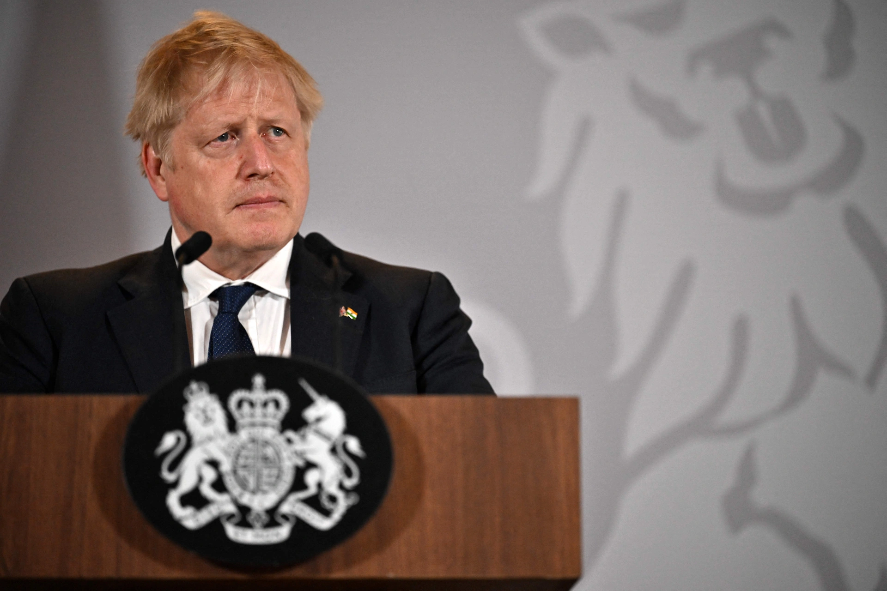

Nga đáp trả lệnh trừng phạt của Anh
Vân Đinh Thứ tư, 27/4/2022 18:40 (GMT+7)
Bộ Ngoại giao Nga ngày 27/4 thông báo cấm nhập cảnh đối với 287 nghị sĩ Anh để đáp trả lệnh trừng phạt của London đối với các thành viên Hạ viện Nga trước xung đột tại Ukraine.

Để đáp lại quyết định của chính phủ Anh vào ngày 11/3 về việc bổ sung 386 nghị sĩ Duma Quốc gia (Hạ viện) vào danh sách trừng phạt, trên cơ sở có đi có lại, các hạn chế cá nhân đang được áp dụng đối với 287 thành viên của Hạ viện Anh", Bộ Ngoại giao Nga cho biết trong một tuyên bố. Hạ viện Anh có tổng số 650 thành viên.
Thủ tướng Anh Boris Johnson ngày 22/4 thừa nhận khả năng thực tế Nga sẽ giành chiến thắng trong chiến dịch quân sự ở Ukraine. Ông nói tình hình hiện tại "khó đoán".

Thiệt hại đối với cơ sở hạ tầng của Ukraine kể từ khi Nga tấn công đã lên tới khoảng 60 tỷ USD và sẽ còn tăng, Chủ tịch Ngân hàng Thế giới David Malpass ngày 21/4 cho biết.

- a
- b
- c
- d